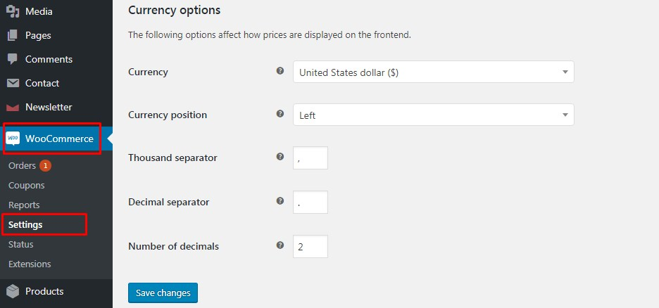

Documentation GrainWebsite
Documentation GrainWebsite
@ 2022 Copyright Conçu par Monark-group.
Thank you for purchasing AI Lab WordPress Theme. Before you get started, please be sure to always check out these documentation files. We outline all kinds of good information, and provide you with all the details you need know to use AI Lab Theme.
If you are unable to find your answer here in the documentation, please contact us on our Support Center or directly
from our themeforest account.
Thanks so much for purchasing our Theme. It's our pleasured of making your choice. We hope that you would enjoy it!
To download the AI Lab theme, please log in your ThemeForest account and then go to ThemeForest download page. Locate to AI Lab theme and then download the installable WordPress file only.
When you download the theme from Themeforest, you will get an archive file in .zip
extension.
You need to unzip that archive. When done, you should see
AI Lab.zip (zip file name can be changed from version to version).
Please, follow the steps below to install AI Lab Theme.
Step 1 - Login to your WordPress
Dashboard.
Step 2 - Go to Appearance >
Themes. Click Add new button, located at the top of the screen or
Add new theme ( see screenshots below ).
Step 3 - Click on Upload
button at the top of the screen.
Step 4 - Choose
AI Lab.zip.
Step 5 - Wait while the theme is uploaded
and installed then activate the theme.
Step 6 - After activating the theme a notice
should appear on the top of the screen, click on begin installing plugins ( see
screenshots below ).
Step 7 - Select all the plugin,change Bulk
Actions drop to Install then click apply ( see screenshots below ).
Step 8 - Congratulation you are ready to use
AI Lab, check the Initiate Steps part of our documentation to see what you may
want to do before starting to edit your WordPress Site.


“Are you sure you want to do this?”
If you get the “Are you sure you want to do this” message
when installing AI Lab.zip file via WordPress, it means you have an
upload file size limit. Install the theme via FTP if this happens, or
ask your hosting company to increase the limit.
Missing stylesheet file
If you get an error saying that the stylesheet is missing,
then you have uploaded the wrong folder. Please check that you are
uploading the AI Lab.zip within the Theme Files folder. You have to
unzip the file that you download from Themeforest to find this.
If you are going to install the theme using FTP, you will need an FTP Client, such as FileZilla.
When you download the theme from Themeforest, you will get an archive file in .zip
extension.
You need to unzip that archive. When done, you should see AI Lab
Folder(folder name can be changed from version to version).
Please, follow the steps below to install the theme via FTP:
Step 1 - Log into your hosting space
(server) via FTP client.
Step 2 - In extracted archive folder, find
AI Lab folder
Step 3 - Upload the AI Lab
folder to your server in path ../wp-content/themes/.
Step 4 - The uploaded path should be like
this: ../wp-content/themes/AI Lab/
Step 5 - Login to your WordPress Dashboard
and go to Appearance > Themes and activate the AI Lab theme.
Step 6 - After activating the theme a notice
should appear on the top of the screen, click on begin installing plugins ( see
screenshots below ).
Step 7 - Select all the plugin,change Bulk
Actions drop to Install then click apply ( see screenshots below ).
Step 8 - Congratulation you are ready to use
AI Lab, check the First Steps part of our documentation to see what you may want
to do before starting to edit your WordPress Site.
Before importing the dummy data Make sure you have all the plugin installed (if you want to use portfolio, team, testimonial, packages and woocommerce. You make sure to install all first ).
If you have problems importing the demo ( example :
infinite loading, error 505 with when using wordpress importer ) then
you may have a problem with the server settings. Please create ticket in Our Support
Center.
Step 1 - Log into your WordPress
Dashboard.
Step 2 - Install and Activate All
Plugin.
Step 1 - Log into your WordPress
Dashboard.
Step 2 - Go to Unyson.
Continue to click on Download Backup & Demo Content button.
Step 3 - Then go to Tools >
Demo Content Install > Install
Step 4 - The Dummy content is really big
and may takes more then 30 minutes to import depending where you are living, Do not
interrupt/cancel the import process!
Step 6 - Done!
This video tutorial shows you how to Import Data AI Lab Theme with just one click.
If you would like to learn the best practice of using AI Lab theme, you can import content from our demo web site. Importing theme is performed using XML file located in theme ZIP file downloaded from Themeforest and following these steps.
Elementor is the most popular drag and drop editor for Wordpress.

If you need dedicated support for this component, please visit: Elementor.
Here is Documentation of Elementor guide.
AI Lab theme includes the premium plugin - Revolution Slider.
Once you've installed and activated the Revolution Slider
plugin, you will then see the menu item appear at the bottom of the
WordPress menu, as below:

You can import the revolution slider we used in our demo, all slider are in the slider folder. To learn more about the Revolution Slider plugin please read the Plugin documentation
For full documentation visit the following websites:
WooCommerce Plugin
Page
WooCommerce
Documentation
WooCommerce
Community Forums
WooCommerce Builtin
Shortcodes
WooCommerce 101
video series
Sometimes the halfway is better: what if you are looking to a product in a list and its image is still too small?
You have to open its product page, waiting for its loading and finally observe what you are interested into. So why don't use a simple way to look immediately at the product's distinctiveness? Here it is what Quick View can offer you.
People are more attracted to what they can see clearly. And often the classic product lists are not enough to understand the real value of a product. That's when Quick View strikes successfully! Your clients will be free to look in a better way your products, reading also a small description with all the most important features and qualities you want to underline. In this way, they will be more focused on what they really want and they will proceed easily to the purchase step.
Main features:
- Add a button in product loop to open a modal window with the product summary using
ajax.
- Choose to enable the prettyPhoto lightbox for images in quick view.
- Customize style of modal.
Full documentation is available here.
Step 1 - Login to your WordPress
Dashboard.
Step 2 - Go to Theme Settings
> General.
Step 3 - Choose which part of the theme
you want to modify.
1. General - To upload logo, favicon,
change link send mail, link login form redirect, turn on/off the Less Option,...
2. Header - Choose the header layout that you want to show on website
3. Footer - Choose the footer layout that you want to show on website
4. Color Styling - Select the primary color, button color,
hover color for items in your website.
5. Title Bar - show title bar on website include images and breadcrumb .
6. Blog - Setting some attributes in your
blog detail.
7.Shop - Setting some attributes in your
shop.
8.Typography - Specify the body font
properties.
Step 4 - When you finish customizing the
general options don't forget to save.

Step 1 - Go to Settings >
Reading in your WordPress Dashboard panel.
Step 2 - Set "Front page
displays" to a "Static Page".
Step 3 - In the drop down menu for
"Front Page" choose a page which will be your home page.
Step 4 - Leave the drop down menu for "Posts
page" empty, as this is not used by the theme.
Step 5 - Save changes.

Headers built by Elementor, so you can easy to edit the header
Step 1 - Login to your WordPress
Dashboard.
Step 2 - Go to Header Footers Template
and choosing the header that you want to add this menu after that
click Edit With Elementor.
Besides, if you want to show your header/footer to a special page (Ex: only show header 2 to page contact), please follow these steps:
Step 1 - Go to the page that you want to show your header.
Step 1 - Login to the WordPress
Dashboard.
Step 2 - From the
'Appearance' menu on the left-hand side of the Dashboard,
select the 'Menus' option to bring up the Menu Editor.
The Screen Options allow you to choose which items you can use to add to a menu. Certain items, like Posts are hidden by default. The Screen Options are located in the top right corner of your WordPress Dashboard.
Step 1 - Locate the pane entitled
Pages.
Step 2 - Within this pane, select the
View All link to bring up a list of all the currently published Pages on
your site.
Once you've created a menu and filled it with items, it's time to assign it to one of the theme pre-defined locations.
Step 1 - Go to Header Footers Template
and choosing the header that you want to add this menu after that
click Edit With Elementor.
Add a mega menu create by Elemetor is very easy with Elementor.
Step 1 - Create a Mega menu shortcode by
Elementor: Templates -> Add New .
Step 2 - Go to Templates -> Saved
Tempates to copy the mega menu shortcode
Please follow these steps to upload your Logo
Step 1 - Go to Theme Setting >
General -> Logo and upload your logo
Besides, can upload your logo image in Your Header by Elementor. Please, follow the steps below to upload your logo & favicon:
Step 1 - Go to Header Footers Template and choosing the header that you want to show on your website
after that click Edit With Elementor.
To upload the favicon, please go to Theme Settings > General

Also, you can upload your favicon image in the Appearance. Please, follow the steps below to upload your favicon:
- Go to Appearance > Customize > Site Identity.

To turn on the loading page, please go to Theme Settings > General ->turn on the Logo Loading -> and add the logo loading
When showing your blogs or any posts if the Featured Image is empty the Empty image will show on your website like this:
To add the empty image, please go to Theme Settings > General -> Empty Image -> and add the image
After user register account and verify email will be send to client when click to the "Verify your account" button your website will redirect to the page that we are setup at here:


To add the verify link, please go to Theme Settings > General -> Link verify email -> and add the link verify at here

For each page you can change the title style, title background color, header layout, footer layout, etc. Check the screenshot and read the documentation to see how it works

Please follow the steps below to set up archive pages:
Step 1 - Login to your WordPress
Dashboard.
Step 2 Go to Templates > Theme
Builder.
Step 3 - Choose Archive
page and edit with elementor.
Step 3 - Add conditionals to show archive blogs
Please follow the steps below to set up Shop page:
Step 1 - Login to your WordPress
Dashboard.
Step 2 - Go to Templates
> Theme Builder.
Step 3 - Choose Shop Page
Template that you want to apply for website.
Please follow the steps below to set up Single Product page:
Step 1 - Login to your WordPress
Dashboard.
Step 2 - Go to Templates
> Theme Builder.
Step 3 - Choose Shop Page
Template that you want to apply for website.
Step 1 - Login to your WordPress
Dashboard.
Step 2 - Go to Theme Settings
> Colors Styling
You can change the main color and hover color at here.
Besides, if you want to change the color on a special page (Ex: only change the button color on About us page to blue color), please follow these steps:
Step 1 - Go to the page that you want to show your header.

Step 1 - Log in to your WordPress
Administration Panel (Dashboard).
Step 2 - Click the 'Blog
Posts' tab.
Step 3 - Click the 'Add
New' sub-tab.
Step 4 - Start filling in the
blanks: enter your post title in the upper field, and enter your post
body content in the main post editing box below it.
Step 5 - As needed, select a category, add
tags, post format, fill in the meta setings below the editor.
Step 6 - Upload a featured image for your
Post.

To you show your posts you need to create a Blog page.


AI Lab theme includes support for the Elementor plugin. Elementor comes with a lot of block to help you quickly and easily building your pages.
You can read more information with the documentation live at link https://elementor.com/ to understand how it works.Step 1: Go to Pages > click "Add new" and then enter your page information.

Step 2: Click Edit With Elementor Button to edit content.
We created a lot of elemtent in Elementor, you can flexible to build your page
Click on "Publish" to save and publish your new page or "Save draft" to save it as a draft.
Here is how it works on our page

Step 1 - Install POEdit https://poedit.net/
Step 2 - Open file ***.pot by POEdit
and traslate it : http://prntscr.com/bmhtpt
Step 3 - Click Save to save
changes.
We created many elementor widgets with many layout, you just need search with keywork is "jws", all of widget create from us will be show for you
Having many ways to create the title bar on your website
Step 1 - Go to edit page ".
Step 2 - Choose Page Template is "Page Tempate with titlebar".
If you want to change the background image of the title bar please go to the Theme Setting -> Title bar and change the background at here
Or you can setup the Featured Image to make the background image on the title bar like this:
*Beside with page create from Theme Builder like single product page, shop page and blog archive page (blog listing page),.. you cannot using the title bar on theme option, we only can create the title bar by the way using widget we create to build it
If you want to turn off the title bar or the breadcrumb please choose another page template or turn off the titlebar at here
Please go to Woocommerce > Settings > General > Currency Options

This is the instruction of configureurating currency tab in WooCommerce Settings.
AI Lab comes with a Child Theme.
Simply install AI Lab-child.zip like a regular WordPress theme.
A child theme is a theme that inherits the functionality of another theme, called the parent theme. Child themes allow you to modify, or add to the functionality of that parent theme. A child theme is the best, safest, and easiest way to modify an existing theme, whether you want to make a few tiny changes or extensive changes. Instead of modifying the theme files directly, you can create a child theme and override within.
There are a few reasons why you would want to use a child theme:
Child
Themes - Codex
You can watch this video to know the way create a Child Theme.
You need to use a Child Theme only if you are making code customizations.
Updating the theme via WordPress is very similar to the install process via WordPress.
Follow
the steps below to update your theme via WordPress:
Step 1 - Log into your WordPress
Dashboard.
Step 2 - Go to Appearance >
Themes.
Step 3 - Deactivate the
AI Lab theme by simply activating a different theme. Once you activate a different theme, you can
delete the AI Lab theme.
Step 4 - Delete the AI Lab
theme. Do not worry, your content will not be lost!
Step 5 - Then simply upload the new
“AI Lab.zip” file in the Appearance > Themes section. Click
on the Install Themes tab at the top and choose to upload the zip file. You
have this step explained in section: Theme Installation via WordPress.
Updating the theme via FTP is very similar to the install process via FTP.
Follow the steps
below to update your theme via FTP:
Step 1 - Go to ../wp-content >
themes
location on your server using a FTP client and backup your "AI Lab"
theme folder by saving it to your computer, or you can choose to simply
delete it. Your content will not be lost.
Step 2 - Download the new version of AI Lab
theme from your Themeforest and retrieve AI Lab folder by unpacking the zip that
you download from Themeforest and AI Lab_(version.number).zip.
Step 3 - Then simply drag and drop the new
"AI Lab" theme folder into ../wp-content > themes location. Choose to
“Replace” the current one if you did not delete it.
Step 4 - Log into your WordPress Dashboard,
go to Appearance > Themes and activate the new AI Lab theme.
There are several things you can do to speed up your website. First thing you need to turn off the Less Option in Theme Setting after you changed any thing on theme setting and after you import the demo data. Consider adding a caching plugin to WordPress. We use and recommend W3 Total Cache. Another thing you can do is use a Content Delivery Network provider. We use and recommend MaxCDN (See our infographic about What is a CDN and Why you need it). You should also consider using a better web hosting provider. Shared hosts are usually slower. If you are receiving a lot of traffic, then you should consider moving to a VPS or a Dedicated server. Last but not least, check out our presentation about Maximizing Performance and Speeding up WordPress.
Yes, all you need to do is point the domain name to the hosting account.
There is no limit to the number of plugins you can install. However, too many plugins or even a few poorly coded plugins can slow your site down immensely, so it is important to install plugins correctly.
This most likely happens when you paste a code from a website with wrong formats. Sometimes the formatting error is done on the website where the code is available however most of the time, this error happens because you pasted the code on the wrong location. Unfortunately, you will not be able to make the edits using your wp-admin section. You will have to use FTP to login to your web host and modify your theme’s file.
Consider following our Beginner’s Guide to Pasting Code from the Web into WordPress.
We have written an extensive article on How to Install and Setup Google Analytics in WordPress. It is important to mention that you will NOT be able to install Google Analytics in your WordPress.com blog. They provide a built-in feature called WordPress.com Stats.
Embedding videos can add quite a bit of value to your blog and your content. Whether you want to use your own videos or just any video from YouTube or another video hosting site, you need to know how to embed videos within your posts.
The process is very simple and you can just post the URL for the video within the post. Make sure to put it where you would like it to show up. For more information about embedding videos in WordPress, check out our post about The Easiest Way to Embed Videos in WordPress.
Installing a copy of WordPress on your PC is possible. You can do this fairly easily, but you will need the right tools. Another thing to keep in mind, when you install WordPress on your PC, nobody will be able to see your website until you publish it with your own hosting account.
You can find out how to install WordPress on your PC without post called, A Quick Guide to Installing WordPress with WAMP on your Windows Computer.
Please take a look at this Article
Recommended PHP configuration limits are as follows:
You can verify your PHP configuration limits by installing a simple plugin found here. If you still cannot resolve the 500 error, talk with your web hosting support.
If you are installing your theme from the WordPress theme installer, but get a message that says "Are you sure you want to do this?", most likely your web server is configured with low PHP settings that only allow a certain size ZIP file to be uploaded via WP admin.
Most hosting companies configure their servers to only have the maximum file upload size limit at 8-10 MB, some are less. The AI Lab theme ZIP is currently about 34 MB in size which is due to the included plugins and all the demo content. So if you get this error, your web server is rejecting the upload due to the overall size of the AI Lab.zip file. WordPress is unfortunately giving you a rather ambiguous message in response. This is not a theme issue or bug.
There two ways to solve this problem.
Recommended PHP configureuration limits are as follows:
memory_limit 128M
post_max_size 32M
upload_max_filesize 32M
max_execution_time 600
{kind=link}
{kind=link}
{kind=link}
{kind=link}
{kind=link}
{kind=link}
{kind=link}
{kind=link}
{kind=link}
{kind=link}
{kind=link}
{kind=link}
{kind=link}
{kind=link}
{kind=link}
{kind=link}
{kind=link}
{kind=link}
{kind=link}
{kind=link}
{kind=link}
{kind=link}
{kind=link}
{kind=link}
{kind=link}
{kind=link}
{kind=link}
{kind=link}
{kind=link}
{kind=link}
{kind=link}
{kind=link}
{kind=link}
{kind=link}
{kind=link}
{kind=link}
{kind=link}